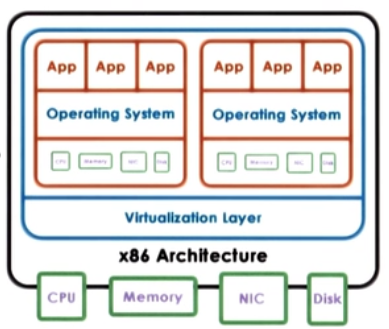
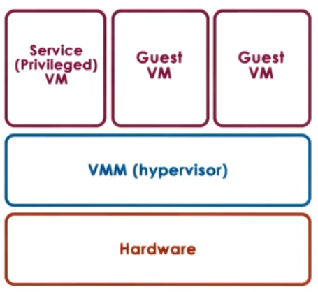

Virtualization
Virtualization allows concurrent execution of multiple OSs and their applications on the same physical machine.

- Virtual resources : each OS thinks that ot "owns" hardware resources
- Virtual machine (VM) : OS + applications + virtual resources (guest domain)
- Virtualization layer : management of physical hardware (virtual machine monitor, hypervisor)
Defining Virtual Machine
A Virtual Machine is an efficient, isolated duplicate of the real machine.
- Supported by a Virtual Machine Monitor (VMM):
- provides environment essentially identical with the original machine
- programs show only minor decrease in speed at worst
- VMM is in complete control of the system resources
VMM goals
- Fidelity
- Performance
- Safety and Isolation
Virtualization advantages
- consolidation
- decrease cost, improve manageability
- migration
- availibility, reliability
- security, debugging, support for legacy OS
Two main Virtualization Models:
1. Bare-metal or Hypervisor based (Type 1)

- VMM (hypervisor) manages all hardware resources abd supports execution of VMs
- privileged, secure VM to deal with devices (and other configuration and management tasks)
- Adopted by Xen(Opensource or Citriol Xen Server) and ESX (VMware)
1. Hosted (Type 2)

- Host owns all hardware
- Special VMM modle provides hardware interfaces to VMs and deals with VM context switching
Virtualization requirements
- Present virtual platform interface to VMs
- virtualize CPU, memory, devices
- Provide isolation across VMs
- preemption, MMU for address translation and validation
- Protect guest OS from applications
- can't run guest OS and applications at same protection level
- Protect VMs from guest OS
- can't run guest OS and VMMs at same protection level
Hardware protection levels
Commodity hardware has more than two protection levels

- x86 has 4 protection levels (rings)
- ring 3 : lowest privilege (applications)
- ring 1 : OS
- ring 0 : highest privilege (hypervisor)
- and 2 protection modes
- non root : VMs
- ring 3 : apps
- ring 0 : OS
- root :
- ring 0 : hypervisor
- non root : VMs
Process Virtualization (Trap-and-Emulate)
- Guest instruments
- executed directly by hardware
- for non-privileged operations : hardware speeds => efficiency
- for privileged operations : trap to hypervisor
- Hypervisor determines what needs to be done:
- if illegal operation : terminate VM
- if legal operation : emulate the behaviour the guest OS was expecting from the hardware
Problems with Trap-and-Emulate
- 17 privileged information do not trap but fail silently
- Hypervisor doesn't know, so it doesn't try to change settings
- OS doesn't know, so assumes change was successful
Binary Translation
Goal : Full Virtualization i.e. guest OS is not modified
Approach : Dynamic Binary Translation
- Inspect code blocks to be executed
- If needed, translate to alternate instruction sequence
- e.g. to emulate desired behaviour, possibly avoid traps
- Otherwise run at hardware speeds
- cache translated blocks to amortize translation costs
Paravirtualization
Goal : Performance; give up on modified guest OSs
Approach : Paravirtualization : modify guest OSs so that
- it knows it is running virtualized
- it makes explicit calls to hypervisor (hypercalls)
- hypercalls (~ system calls)
- package context information
- specify desired hypercall
- trap to VMM
- Xen : opensource hypervisor
Memory virtualization
- Full virtualization
- all guests expect contiguous physical memory starting at 0
- virtual vs physical vs machine addresses and page frame numbers
- still leverages hardware (MMU, TLB..)
- Option 1
- guest page table : VA => PA
- hypervisor : PA => MA
- too expensive!
- Option 2
- guest page tables : VA => PA
- hypervisor shadow PT : VA => MA
- hypervisor maintains consistence
- e.g. invalidate on context switch, write protect guest PT to track new mappings
- Paravirtualized
- guest aware of virtualization
- no longer strict requirement on contiguous physical memory starting at 0
- explicitly registers page tables with hypervisor
- can "batch" page tables updates to reduce VM exits
- other optimazations
Overheads eliminated or reduced on newer platforms
Device Virtualization
- For CPUs and Memory
- less diversity, Intruction-Set-Architecture(ISA) level
- Standardization of interface
- For Devices
- high diversity
- lack of standard specification of device interface and behaviour
3 key models for Device Virtualization:
1. Pass through model
Approach: VMM-level-driver configures device access permissions

Advantages
- VM provided with exclusive and direct (VMM bypass) access to the device
Disadvantages
- Device sharing difficult
- VMM must have exact type of device as what VM expects
- VM migration tricky
2. Hypervisor - Direct model
Approach:
- VMM interrupts all device accesses
- Emulate device operations
- translate to generic I/O operations
- traverse VMM-resident I/O stack
- invoke VMM-resident driver

Advantages
- VM decoupled from physical device
- Sharing, migration, dealing with device specifics
Disadvantages
- Latency of device operations
- Device driver ecosystem complexities in Hypervisor
3. Split Device-Driver model
Approach:
- Device access control split between
- Emulate device operations
- front-end driver in guest VM (device API)
- back-end driver in service VM (or Host)
- modified guest drivers
- i.e. limited to paravirtualized guests

Advantages
- Eliminate emulation overhead
- Allow for better management of shared devices